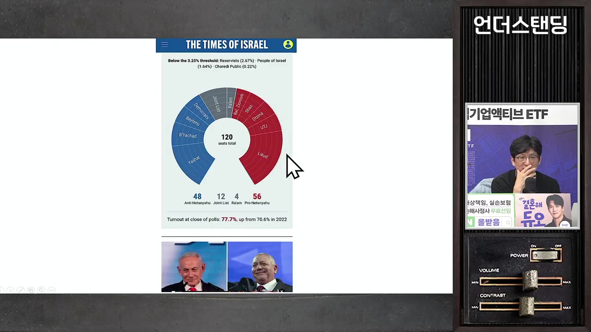
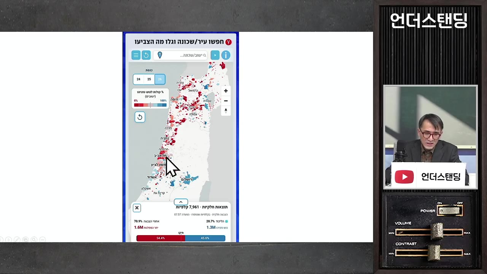
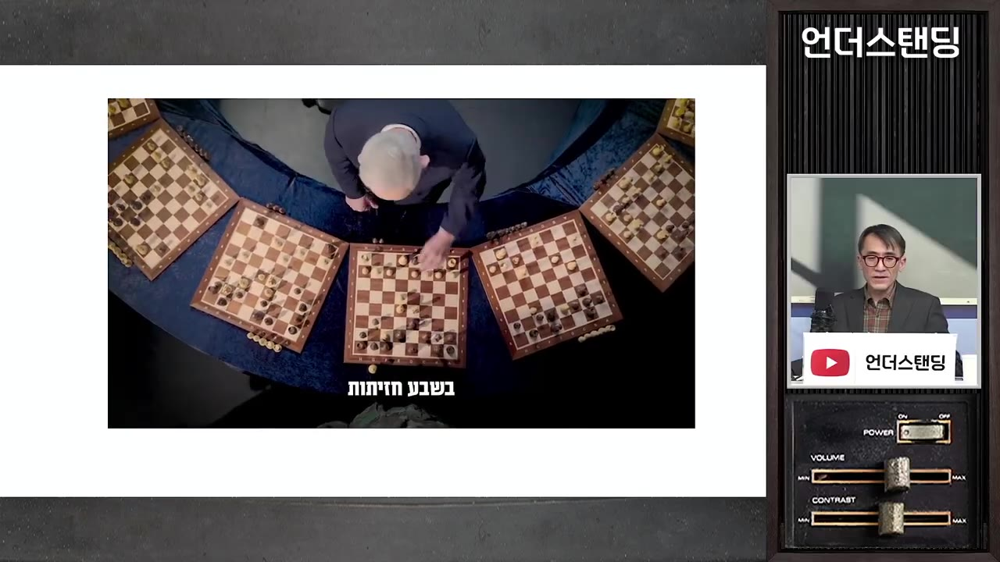
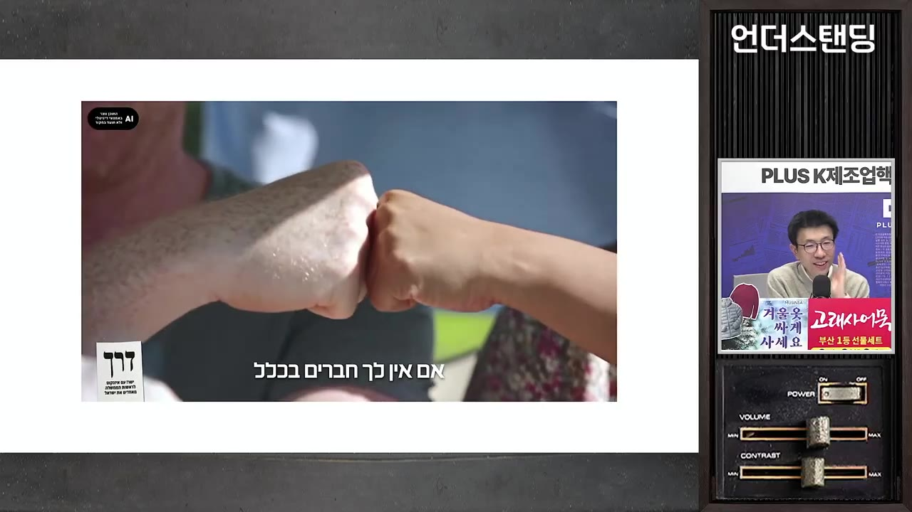

이스라엘 총선에서 예상을 깨고 네타냐후 진영이 앞서. 11월까지 연정 구성해야 하는 네타냐후의 중동전쟁 다시 시작되나 (서강대 유로메나 연구소 성일광 교수)
▶ 원본 영상 보기한눈에 보기
- 개표 약 60% 시점(10/28)에서 네타냐후의 리쿠드당이 27석으로 1당이 확실해 보이고, 2당 아이젠코트 정당(20~21석)과 6~7석 차이가 난다.
- 과반은 120석 중 61석인데, 네타냐후 기존 연정은 54~56석, 반네타냐후 진영은 47~48석, 아랍 정당은 16~17석이라 어느 쪽도 혼자 과반이 안 된다.
- 아랍 정당과 손잡기 어려운 야권보다, 옛 우파 동지 1곳만 다시 데려오면 되는 네타냐후가 유리하다. 연정에 실패해도 재선거까지 최소 5개월은 총리직을 유지한다.
- 성일광 교수는 11월 3일 미국 중간선거 뒤 이란 전쟁이 다시 시작되면 이스라엘에 '전시 대연정'이 생길 수 있다고 본다. 다만 전쟁 결정권은 트럼프에게 있다고 한다.
- 최악의 시나리오는 미국이 이란의 가스·정유·발전 시설을 치고, 이란이 사우디 아람코와 카타르 라스라판 LNG를 보복 공격해 유가·가스값이 급등하는 것이다.
이런 분께 도움이 됩니다
- 이스라엘 총선 결과가 중동 정세와 유가에 어떤 영향을 줄지 빨리 파악하고 싶은 분
- 이스라엘 다당제와 연정 구성 절차를 한 번에 이해하고 싶은 분
- 11~12월 중동 리스크를 투자 관점에서 점검하려는 분 (영상 속 전망이며 확정된 사실이 아님)
핵심 내용
개표 중간 결과: 1당은 네타냐후, 과반은 아무도 없다
- 녹화 시점인 10월 28일 저녁 기준 개표율은 약 60%다. 리쿠드당(네타냐후)이 27석, 제1야당인 아이젠코트의 정당(자막상 '야샤르')이 20~21석이다. (3:26)
- 7석 차이라서 남은 개표에서 뒤집히려면 몰표가 나와야 한다.
- 진영별 의석은 다음과 같다. (14:30)
| 진영 | 의석 | 구성 |
|---|---|---|
| 네타냐후 연정(직전 여당) | 54~56석 | 리쿠드, 샤스, 종교 시오니즘, 오츠마 예후디트, 초정통파 정당 |
| 반네타냐후 연대 | 47~48석 | 아이젠코트 정당, 이스라엘 베이테누 등 |
| 아랍 정당 | 16~17석 | 2개 정당(한때 "18석"이라는 말도 나옴) |
- 출구조사와 여론조사 3~4곳이 모두 "아이젠코트 1당"을 예상했지만 모두 틀렸다. 교수는 '샤이 네타냐후' 지지층이 숨어 있었던 것으로 본다. (40:56)
- 투표율도 높았다(자막상 "77~80%까지 예상", 정확한 수치는 불분명). 2023년 하마스 공격 이후 '정권 심판이냐, 유지냐'를 가르는 선거였기 때문이다.

왜 이스라엘은 한 정당이 과반을 못 얻나
- 다당제 구조라서 한 당이 40~50석을 넘기기 어렵다. 60석을 넘긴 정당은 사실상 없었다.
- 유권자 집단이 나뉘어 있다.
- 아랍계 시민이 인구의 약 20%이고, 주로 아랍 정당에 투표한다.
- 초정통파 유대교인(하레디)이 15~20%이고, 하레디 정당(3개 정도)에 투표한다.
- 이라크·스페인·이란·캐나다 등 출신이 다양한 이민자 국가라서 정당이 잘게 나뉜다.
- 지역 색도 뚜렷하다. 세속 도시인 텔아비브·네타냐는 반네타냐후, 종교 도시인 예루살렘은 네타냐후 연대가 강하다. 예루살렘에는 초정통파 유대인이 계속 모여들고 있다. (56:00)
💡 '연정 퍼즐'이 기본값인 나라라서, 1당보다 누가 61석을 맞추느냐가 승부다.

연정 구성 절차
🔁 이스라엘 연정 구성 순서
- 1당에 기회 부여
- 14일 연장
- 2당에 기회 이전
- 재선거
- 11당에 기회 부여
대통령이 의석이 가장 많은 당 대표(네타냐후)에게 28일 동안 연정 구성 기한을 준다. 원칙상 최다 의석 정당에 먼저 준다. (20:13)
- 214일 연장
28일 안에 구성하지 못하면 14일을 연장할 수 있다.
- 32당에 기회 이전
그래도 안 되면 2당 대표(아이젠코트)에게 28일이 주어진다. 기회는 한 번씩만이다.
- 4재선거
양쪽 모두 실패하면 다시 선거를 한다(교수 예상: 내년 3~4월).
- 새 정부가 생길 때까지 현 총리(네타냐후)가 총리직을 유지한다. 최소 5개월이다.
- 공식 결과는 11월 4일에 나온다. 28일이면 11월 말, 연장하면 12월 초까지 연정 협상이 이어진다. (58:50)
💡 네타냐후는 연정에 실패해도 손해가 없다. 재선거 전까지 총리로서 성과를 쌓을 시간이 생긴다.
야권이 연정을 짜기 어려운 이유: 아랍 정당 문제
- 반네타냐후 연대 47석에 아랍 정당 16~17석을 더하면 61석을 넘는다. 하지만 2023년 하마스 공격 이후 국민 정서상 아랍 정당과의 연정은 받아들여지기 어렵다. (8:22)
- 과거 나프탈리 베넷 총리가 아랍 정당과 연정한 전례는 있다.
- 유대계 정당들은 아랍 정당에 두 가지 조건을 내건다.
- ① 이스라엘을 '유대인 국가'로 인정할 것: 기본법(헌법에 준하는 법)이 이스라엘을 'Jewish State'로 정의한다. 인구 20%가 아랍계인데도 진보 진영조차 '이스라엘인의 국가'로 바꾸자는 제안을 받아들이지 않는다. (9:56)
- ② 하마스를 테러 단체로 인정할 것: 아랍 정당 안에도 공산당·이슬람주의·세속주의 정당이 섞여 있어 공개적으로 선언하기 어렵다.
- 네타냐후는 선거 캠페인에서 이 점을 공격했다. "아랍 정당과 연정하는 아이젠코트를 찍으면 아랍의 나라가 된다"는 메시지다. 특히 무슬림형제단(하마스의 전신)과 성향이 비슷한 라암 정당과의 연정 가능성을 겨냥했다. (43:21)
- 이번에는 원래 투표율이 낮던 아랍계 시민들도 결집했다. 반아랍 정서와 지역 예산 차별에 맞서 의석수로 목소리를 내야 한다는 판단이다.
네타냐후가 연정을 짜기 쉬운 이유: 옛 우파 동지 1곳이면 된다
- 반네타냐후 연대에 있는 이스라엘 베이테누 등 우파 정당 2곳은 원래 네타냐후와 연정했던 정당이다. 정책이 아니라 네타냐후 개인이 싫어서 떠났다. (14:54)
- 이유는 '뒤통수'였다. 총리직을 2년씩 나눠 맡기로 해 놓고 자기 차례가 오자 넘겨주지 않았다고 한다.
- 이 중 한 곳만 데려와도 61석을 넘긴다. 교수는 네타냐후가 "총리 빼고 다 주겠다"는 식으로 설득할 것으로 예상한다. 야권에 오래 있던 정당은 장관직 등 여당 자리에 끌릴 수 있다.
- 반대로 야권이 네타냐후 쪽 정당을 빼 오기는 어렵다. 종교 정당들은 초정통파 병역 면제법을 반드시 지키려 하는데, 군 참모총장 출신 아이젠코트는 이를 절대 받아들일 수 없다는 입장이다. (18:25)
- 전쟁이 3년째 이어지며 병력이 절대적으로 부족한데 초정통파 청년들은 계속 징집되지 않는다.
세 가지 시나리오
| 시나리오 | 내용 | 교수 평가 |
|---|---|---|
| ① 연정 성공 | 네타냐후(또는 아이젠코트)가 61석 확보 | 네타냐후가 유리. 성공하면 18년에 4년 더 |
| ② 둘 다 실패 → 재선거 | 내년 3~4월 선거 | 그때까지 네타냐후가 총리 유지 |
| ③ 대연정(대타협) | 1당과 2당이 손잡고, 강경파(아랍 정당·일부 종교 정당 등)는 빠짐 | 전쟁이 나면 가능성이 충분히 있음 |
- 대연정 논리는 이렇다. 이란이 탄도미사일을 쏘는 전시 상황에서는 정상적인 연정 협상이 어렵다. 그러면 네타냐후가 "국란을 함께 극복하자, 총리는 2년씩"이라며 손을 내밀 수 있다. 아이젠코트는 "이번엔 내가 먼저"를 조건으로 걸 수 있다. (27:17)
- 교수는 네타냐후가 권력 유지를 위해 수단을 가리지 않는 사람이라고 본다. 확실한 5석이 없다면 전쟁이 연정 협상에 유리한 카드가 될 수 있다는 것이다. 지난주에도 "전쟁을 하려 했으나 참모총장·트럼프가 말렸다"는 이야기가 돌았다고 한다.
네타냐후는 왜 여전히 지지받나
- 영상 속 교수의 설명이다. (31:46)
- 콘크리트 지지층: 우파 유권자는 무슨 일이 있어도 우파 정당을 찍는다.
- 18년 집권 경험: 베넷, 라피드, 아이젠코트 중 네타냐후만큼 노련해 보이는 인물이 없다는 인식이 있다.
- 외교·협상력: 미국 대통령을 두 번이나 이란 전쟁에 끌어들였고, 영어도 원어민 수준이다. 캠페인에서 "아이젠코트는 영어를 못 한다"고 공격하기도 했다.
- 군사 성과 내세우기: 헤즈볼라를 무력화했다(호출기 공격). 2026년 2월 28일 이란 최고지도자를 포함한 지도부 약 40명을 제거했다. 다만 하마스 제거와 이란 정권 붕괴라는 목표는 이루지 못했고, 오히려 더 강경한 세력이 들어섰다. (36:46)
- 트럼프 지지 선언: 선거 일주일 전 트루스 소셜에 "네타냐후보다 나은 총리는 없다"는 글이 올라왔다. 당시 여론조사는 움직이지 않았지만 결과적으로 효과가 있었을 수 있다.
- 미디어 장악력: 연설을 직접 쓰고, 카메라 조명의 밝기와 위치, 얼굴 방향까지 따진다. 군소 정당 7~8곳의 요구를 받아 주며 연정을 18년 끌어온 정치력은 인정해야 한다.
- 교수는 7~8년 전까지는 국익을 위해 자기를 희생할 수 있는 정치인으로 평가했다. 이후 뇌물 수사와 2023년 사법 개혁 추진을 거치며 '흑화'했다고 본다.
네타냐후의 책임론 (교수 비판)
- 2023년 사법 개혁(대법원·검찰총장 권한 축소)으로 국민 절반이 거리로 나와 나라가 둘로 갈렸다. 그 틈을 타 10월 하마스가 공격해 하루에 1,200명이 숨졌다. (35:13)
- 인질 약 250명을 전쟁 초반이나 2024년 초에 모두 석방할 기회가 있었지만, 극우 연정 파트너가 반대해 연정이 깨질까 봐 하지 않았다. 그 사이 많은 인질이 숨졌다고 교수는 주장한다. (29:51)
- 총리직에서 물러나면 재판, 특히 2023년 10월 공격을 막지 못한 책임에 대한 조사를 받을 수 있다는 점이 '아킬레스건'이라고 한다.
아이젠코트는 왜 기대에 못 미쳤나
- 모로코 출신 군 참모총장 출신이며, 이번 전쟁에서 아들을 잃었다. 정치 신인으로 처음 당을 만들어 20석을 얻은 것 자체는 나쁘지 않다. (44:51)
- 석 달 전 여론조사에서는 35석까지 나왔지만 지지가 계속 빠졌다.
- 대조적으로 네타냐후는 군 복무 면제 의혹이 있고, 전쟁 중 아들이 플로리다에 머물며 SNS로 물의를 빚었다.
- 야권이 여러 정당으로 나뉜 것도 원인이다. 다만 합친다고 의석이 그대로 더해지지는 않는다.
- 캠페인 영상의 차이도 컸다.
- 네타냐후: 선거 하루 전 공개한 AI 영상(1분 20초). 젊은 시절 모습과 '일곱 개 전선'을 체스판에 빗대 이란·헤즈볼라 성과를 강조하며 애국심에 호소한다.

- 아이젠코트: "우리는 모두 하나"라는 코믹한 콘셉트. 악어 장면은 한 우파 의원의 "하마스 수감 시설 주변에 물을 채우고 악어를 풀자"는 발언을 풍자한 것이다.

- 교수의 아쉬움: 아이젠코트는 2006년 레바논 전쟁 때 북부사령관으로 베이루트 남부 다히야를 초토화한 '다히야 독트린'을 만든 사람이다. "전쟁을 해 본 내가 이제 평화를 택한다"는 메시지로 갔어야 했다는 것이다. (54:45)
💡 진행자 정리: "네타냐후가 잘했다기보다 야당 지도자가 조금 못한 느낌."
이란 전쟁 재개 가능성과 에너지 위기 시나리오 (영상 속 전망)
- 전쟁 결정권은 네타냐후가 아니라 트럼프에게 있다. 다만 미국이 결정하면 이스라엘이 함께할 가능성이 높다. (57:21)
- 트럼프가 전쟁을 검토할 수 있다고 보는 이유:
- 이란과의 협상이 거의 진전되지 않고 있다.
- 지금까지는 중간선거 때문에 참았지만, 선거가 끝나면 부담이 줄어든다.
- "이란에 호르무즈 해협을 내준 대통령"으로 기록되는 것을 피하고 싶어 한다.
- 미국 측 보도로는 "짧고 굵게 3~4일" 전쟁을 한다지만, 상대가 있는 전쟁이라 길어질 수 있다.
- 미국 중간선거(11/3)와 이스라엘 연정 협상 기간(11월 말~12월 초)이 겹친다는 점이 교수가 걱정하는 시나리오다. 전쟁이 나면 네타냐후는 "트럼프가 원해서 어쩔 수 없었다"며 대연정을 제안할 수 있다. (58:35)
- 두 번째 쟁점은 '어떻게 싸우느냐'다. (1:01:49)
- 미국이 이번에는 이란의 가스전·정유 시설·발전소를 칠 수 있다는 이야기가 나온다.
- 그러면 이란이 사우디 아람코와 카타르 라스라판 LNG 시설을 보복 공격하고, 유가와 가스값이 급등할 수 있다.
- 이스라엘은 경제 기반을 초토화하면 이란 국민이 봉기할 것이라 기대하며 이를 부추긴다. 교수는 지도자 제거 때도 봉기는 없었다며 동의하지 않는다.
💡 전쟁 여부보다 '에너지 시설을 치느냐'가 세계 경제에 더 큰 변수라는 것이 교수의 시각이다.
기억할 숫자·인용
- 과반: 120석 중 61석
- 리쿠드 27석 / 아이젠코트 정당 20~21석 / 네타냐후 연정 54~56석 / 반네타냐후 47~48석 / 아랍 정당 16~17석 (개표 약 60% 기준)
- 이스라엘 인구 약 1,000만 명 중 아랍계 약 20%, 초정통파 15~20%
- 연정 기한: 28일, 연장 14일, 이후 2당에 28일. 실패하면 내년 3~4월 재선거
- 미국 중간선거 11월 3일, 이스라엘 공식 결과 11월 4일
- 2023년 10월 하마스 공격: 하루 1,200명 사망, 인질 약 250명
- 2026년 2월 28일: 이란 지도부 약 40명 제거(영상 속 언급)
- 아이젠코트 정당 지지율: 석 달 전 35석, 현재 20~21석
- "국란을 같이 극복하자" — 교수가 예상한 네타냐후의 대연정 제안 문구
- "이란한테 호르무즈 해협을 갖다 바친 대통령" — 트럼프가 가장 피하고 싶은 평가라는 교수의 해석
생각해볼 점
- 개표 60% 시점의 분석이다. 최종 의석은 달라질 수 있으니 최종 결과와 대통령의 연정 구성권 부여 소식을 확인해야 한다. 자막에서 연정 의석이 54~56석, 아랍 정당이 16~18석으로 오락가락한다.
- 네타냐후가 전쟁을 연정 카드로 쓸 것이라는 해석과 인질 협상 비판은 교수의 견해다. "트럼프가 11월 이후 이란을 칠 가능성"도 보도와 관측에 근거한 전망일 뿐, 영상에서도 시점과 실행 여부는 아무도 모른다고 했다.
- 진행자가 말한 "프랑스에서 마크롱 옆에서 이란과 맺은 합의" 대목은 (자막상 불분명)하다. 어떤 합의를 가리키는지 별도로 확인이 필요하다.
바로 해볼 일
- 이스라엘 총선 최종 의석수와 대통령의 연정 구성권 부여(28일 기한 시작일)를 뉴스로 확인하기
- 11월 3일 미국 중간선거 전후 이란 관련 보도와 국제유가·LNG 가격 흐름을 달력에 표시해 두고 지켜보기
- 보유 자산 중 유가·가스값 급등에 민감한 종목이나 업종이 있는지 점검하기